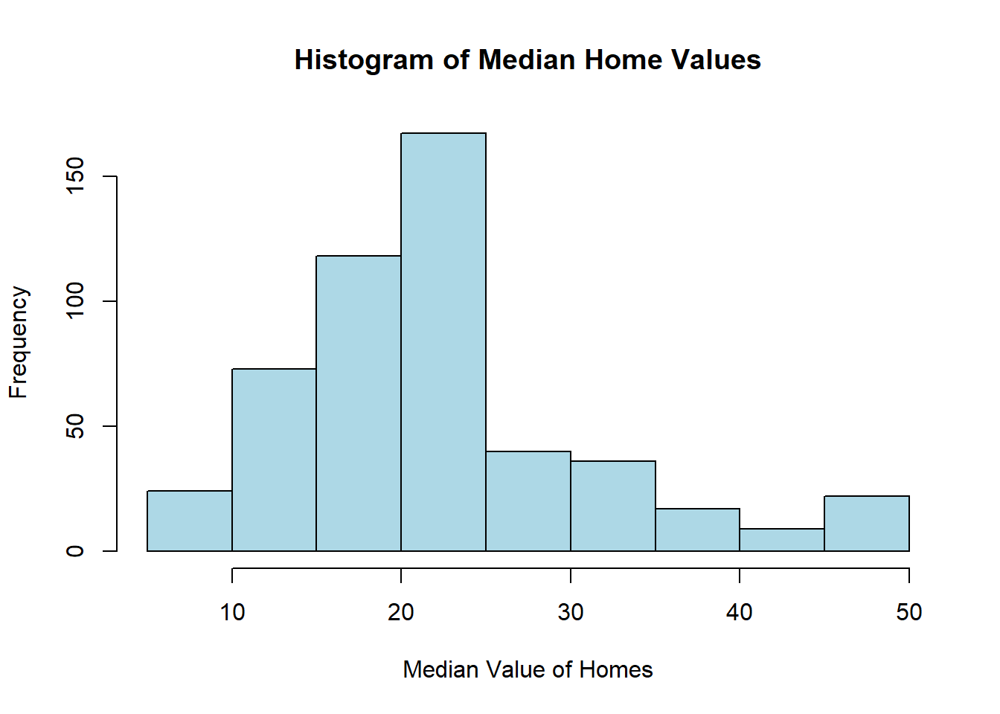

In this task, I will start by looking closely at the data to understand it better. Then, I 'll use a multiple linear regression to make predictions.
There are 52 observations and 18 variables in the data.
1. State: This variable represents the name of each state in the dataset.
2.OwnComputer: This variable represents the percentage of households in each state that own a computer, indicating the level of computer ownership.
3. CommutePublicTransport: This variable represents the percentage of people in each state who use public transportation as their primary means of commuting to work or other places.
4.TotalPopulation: This variable represents the total population of each state, indicating the number of people residing in that state.
5.MedianAge: This variable represents the median age of the population in each state, providing an insight into the state's demographic age distribution.
6.WithCashAssistanceIncome: This variable represents the percentage of households or individuals in each state receiving cash assistance income, possibly from government programs.
7.MeanSocialSecurityIncome: This variable represents the average or mean amount of Social Security income received by individuals in each state.
8. SupplementarySecurityIncome: This variable represent the percentage of people in each state who receives supplementary security income related to social welfare programs.
9. WhiteOnly: This variable represents the percentage of people in each state identifying as White or Caucasian in terms of racial or ethnic background.
10. Latinos: This variable represents the percentage of people in each state identifying as Latino or Hispanic in terms of racial or ethnic background.
11. Asians: This variable represents the percentage of people in each state identifying as Asian in terms of racial or ethnic background.
12. AfricanAmerican: This variable represents the percentage of people in each state identifying as African American or Black in terms of racial or ethnic background.
13. Income100K.150K: This variable represents the percentage or number of households in each state with an annual income falling within the range of $100,000 to $150,000.
14. Income75K.100K: This variable represents the percentage of households in each state with an annual income falling within the range of $75,000 to $100,000.
15. Income50K.75K: This variable represents the percentage of households in each state with an annual income falling within the range of $50,000 to $75,000.
16. Income35K.50K: This variable represents the percentage of households in each state with an annual income falling within the range of $35,000 to $50,000.
17. Income25K.35K: This variable represents the percentage of households in each state with an annual income falling within the range of $25,000 to $35,000.
18. PovertyRate: This variable represents the poverty rate in each state, indicating the percentage of the population living below the poverty line or threshold.
Here, my target variable is commuters
# Create a copy of mydata and call it dataUSdataUS <- mydata# Calculate the commuters variabledataUS$commuters <-100* dataUS$CommutePublicTransport / dataUS$TotalPopulation# Remove the CommutePublicTransport and TotalPopulation variablesdataUS <- dataUS[, !(names(dataUS) %in%c("CommutePublicTransport", "TotalPopulation"))]# Identify the three states with the highest values of commuterstop_states <- dataUS[order(dataUS$commuters,decreasing =TRUE), ][1:3, "State"]# Identify the three states with the lowest values of commutersbottom_states <- dataUS[order(dataUS$commuters), ][1:3, "State"]# Print the resultscat("Three states with the highest values of commuters:", top_states, "\n")
Three states with the highest values of commuters: District of Columbia New York New Jersey
Task 2:
Here, I will Generate a scatter plot.
library(dplyr)
Attaching package: 'dplyr'
The following objects are masked from 'package:stats':
filter, lag
The following objects are masked from 'package:base':
intersect, setdiff, setequal, union
library(ggplot2)# Remove the 'State' columndataUS <-select(dataUS, -State)# Calculate correlationscorrelations <-cor(dataUS, use ="complete.obs")# Create a dataframe with correlations with 'commuters'cor_with_commuters <-data.frame(Variable =row.names(correlations), Correlation = correlations[, "commuters"])# Sort by absolute correlation valuescor_with_commuters <- cor_with_commuters[order(abs(cor_with_commuters$Correlation), decreasing =TRUE), ]# Get the variable with the highest absolute correlationhighest_corr_var <- cor_with_commuters$Variable[1]# Generate the scatter plotggplot(dataUS, aes_string(x = highest_corr_var, y ="commuters")) +geom_point(aes(color = OwnComputer <88)) +labs(x = highest_corr_var, y ="Commuters") +scale_color_discrete(name ="OwnComputer < 88")
Warning: `aes_string()` was deprecated in ggplot2 3.0.0.
ℹ Please use tidy evaluation idioms with `aes()`.
ℹ See also `vignette("ggplot2-in-packages")` for more information.

Task 3:
Here, I will Create a scatterplot that displays the relationship between residuals and fitted values.
library(ggplot2)# Assuming your dataset is named 'dataUS', replace with your actual dataset name# Fit the linear regression model with specified predictorsmodel1 <-lm(commuters ~ MedianAge + Income100K.150K + Income35K.50K + PovertyRate, data = dataUS)# Interpretation of coefficient estimates excluding the interceptcoef_summary <-summary(model1)$coefficientsinterpretations <-paste("MedianAge:", round(coef_summary["MedianAge", "Estimate"], 4),"Income100K.150K:", round(coef_summary["Income100K.150K", "Estimate"], 4),"Income35K.50K:", round(coef_summary["Income35K.50K", "Estimate"], 4),"PovertyRate:", round(coef_summary["PovertyRate", "Estimate"], 4))# Print one-sentence interpretationsinterpretations
# Create a scatterplot of residuals vs. fitted valuesresidual_plot <-ggplot(data =data.frame(Fitted =fitted(model1), Residuals =residuals(model1)), aes(x = Fitted, y = Residuals)) +geom_point() +geom_hline(yintercept =0, linetype ="dashed", color ="red") +labs(x ="Fitted Values", y ="Residuals") +ggtitle("Residuals vs. Fitted Values")# Display the scatterplotprint(residual_plot)